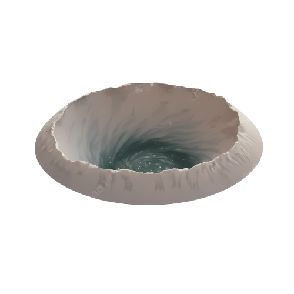

Mercury, the scorching world
Mercury is the closest planet to the Sun and the smallest in the Solar System. Its surface is covered with craters and rocky plains, resembling the Moon, a result of billions of years of asteroid impacts. Mercury has almost no atmosphere, which leads to extreme temperature variations: it can reach 430 °C during the day and drop to −180 °C at night. Its slow rotation causes a day on Mercury to last about 59 Earth days, while its year is only 88 Earth days. Despite its small size, Mercury has a weak magnetic field, hinting at a partially molten core. This tiny, scorching world offers unique insights into the formation and evolution of rocky planets in our Solar System.
